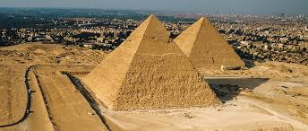
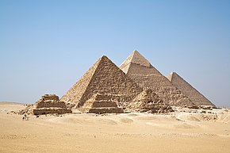

The Egyptian pyramids are ancient masonry structures located in Egypt. Sources cite at least 118 identified "Egyptian" pyramids.[1][2] Approximately 80 pyramids were built within the Kingdom of Kush, now located in the modern country of Sudan. Of those located in modern Egypt, most were built as tombs for the country's pharaohs and their consorts during the Old and Middle Kingdom periods.The earliest known Egyptian pyramids are found at Saqqara, northwest of Memphis, although at least one step-pyramid-like structure has been found at Saqqara, dating to the First Dynasty: Mastaba 3808, which has been attributed to the reign of Pharaoh Anedjib, with inscriptions, and other archaeological remains of the period, suggesting there may have been others.[6] The otherwise earliest among these is the Pyramid of Djoser built c. 2630–2610 BCE during the Third Dynasty.[7] This pyramid and its surrounding complex are generally considered to be the world's oldest monumental structures constructed of dressed masonry.


Preceded by assumed earlier sites in the Eastern Sahara, tumuli with megalithic monuments developed as early as 4700 BCE in the Saharan region of Niger.[11][citation needed] According to F.A. Hassan, it is also possible that these megalithic monuments in the Saharan region of Niger and the Eastern Sahara may have served as antecedents for the mastabas and pyramids of ancient Egypt.[11][citation needed] During Predynastic Egypt, tumuli were present at various locations (e.g., Naqada, Helwan).[11]From the time of the Early Dynastic Period (c. 3150–2686 BCE), Egyptians with sufficient means were buried in bench-like structures known as mastabas.[12][13] At Saqqara, Mastaba 3808, dating from the latter part of the 1st Dynasty, was discovered to contain a large, independently built step-pyramid-like structure enclosed within the outer palace facade mastaba. Archaeological remains and inscriptions suggest there may have been other similar structures dating to this period.